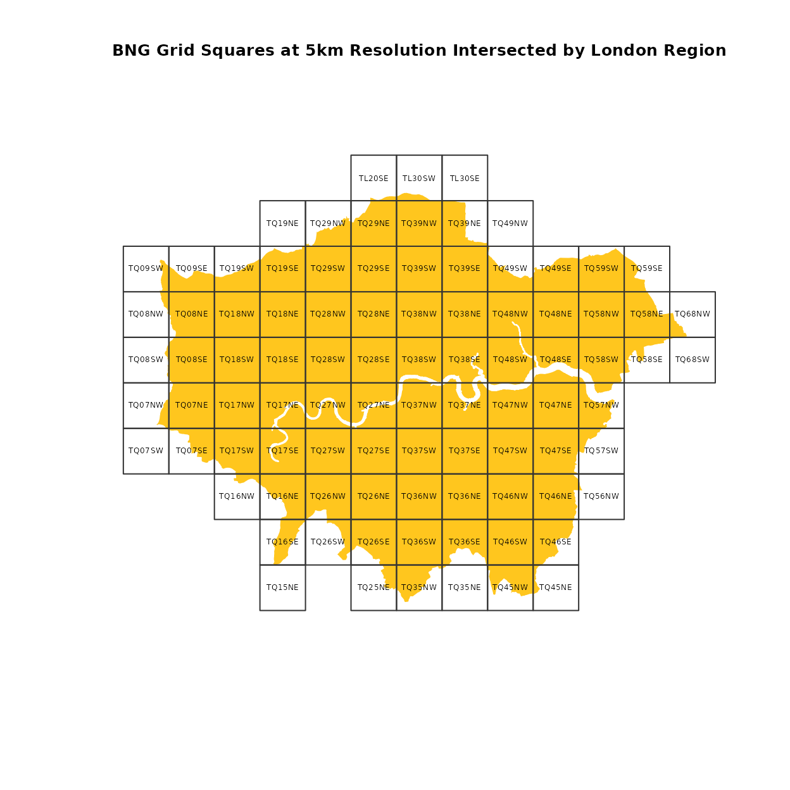
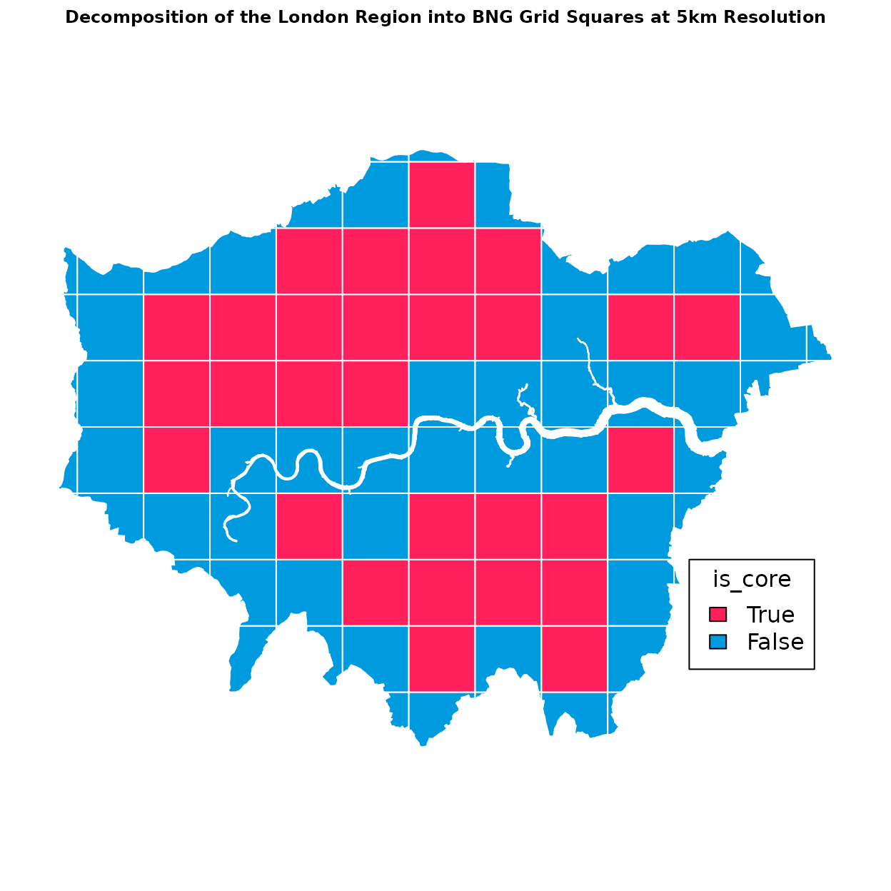

Indexing Polygon Example
Source:vignettes/osbng_indexing_polygon_examples.Rmd
osbng_indexing_polygon_examples.RmdBritish National Grid Indexing Polygon Examples
A key component of the osbng package is the indexing
functionality. The geom_to_bng and
geom_to_bng_intersection functions enable the indexing of
geometries, represented using geos
geometry objects, into grid squares at a specified resolution. Both
functions accept geos (or optionally sf)
objects of the following types: Point,
LineString, Polygon, MultiPoint,
MultiLineString, MultiPolygon, and
GeometryCollection. The geometry coordinates must be
encoded in the British National Grid
(OSGB36) EPSG:27700 coordinate reference system.
These functions facilitate grid-based spatial analysis, enabling
applications such as statistical aggregation, data visualisation, and
data interoperability. The two functions differ in their operation:
geom_to_bng returns the British National Grid (BNG) grid
squares intersected by the input geometry, while
geom_to_bng_intersection returns the intersections (shared
areas) between the input geometry and the grid square geometries.
When deciding between the two functions, consider whether a
decomposition of the input geometry by BNG grid squares is required. The
decomposition logic is computationally more expensive but is useful when
the intersection between the input geometry and a grid square is needed.
This approach supports spatial join optimisations, such as
point-in-polygon and polygon-to-polygon operations, using the
is_core value of the indexed geometry object. These
optimisations are particularly valuable for geospatial analysis of
medium to large datasets in distributed processing systems, where
geometries may be colocated by their BNG references.
Indexing Functions Accepting Geometries
geom_to_bng
This function returns a list of BNGReference objects
representing the BNG grid squares intersected by the input geometry.
Note that BNGReference objects are deduplicated in cases
where multiple parts of a multi-part geometry intersect the same grid
square.
geom_to_bng_intersection
This function returns a list of objects representing the
decomposition of the input geometry into BNG grid squares. Unlike
geom_to_bng, no deduplication occurs. If multiple parts of
a multi-part geometry intersect the same grid square, the intersection
for each part is returned.
geom_to_bng_intersection_explode
This convenience function applies
geom_to_bng_intersection() to each geometry in an
sf data.frame, returning a flattened data.frame by
exploding the list of indexed geometries.
Examples
The examples below demonstrate the application of the two indexing
functions using the London boundary from the administrative England
Regions dataset provided by the Office for National Statistics (ONS).
Metadata for this dataset is available from ?osbng::. The
indexing functions are applied to geometries within an sf
spatial data frame.
Optional sf Dependency
While osbng is fully compatible with sf and can
seamlessly work with data frames in R, it does not require
sf as a hard dependency. With the exception of
geom_to_bng_intersection_explode, the indexing functions
can operate directly on geos Geometry objects. This allows
you to use these functions with standard data structures (e.g., vectors,
data frames) containing geos geometries.
# Read the Office for National Statistics (ONS) England Regions GeoPackage
# Create an sf data frame
# See examples/data/metadata.json for more information about the data source
gdf <- st_read(
system.file("extdata",
"London_Regions_December_2024_Boundaries_EN_BFC.gpkg",
package = "osbng"),
quiet = TRUE)
# Filter the data frame columns
gdf_london <- gdf[, c("RGN24CD", "RGN24NM")]
# Return the data frame
gdf_london
#> Simple feature collection with 1 feature and 2 fields
#> Geometry type: MULTIPOLYGON
#> Dimension: XY
#> Bounding box: xmin: 503571.5 ymin: 155854.3 xmax: 561957.5 ymax: 200933.6
#> Projected CRS: OSGB 1936 / British National Grid
#> RGN24CD RGN24NM geometry
#> 1 E12000007 London MULTIPOLYGON (((531024.6 20...Check/confirm the coordinate reference system used.
# osbng indexing functions require geometry coordinates to be specified
# in British National Grid (BNG) (OSGB36) cordinate reference system
# EPSG:27700
# https://epsg.io/27700
st_crs(gdf_london)
#> Coordinate Reference System:
#> User input: OSGB 1936 / British National Grid
#> wkt:
#> PROJCRS["OSGB 1936 / British National Grid",
#> BASEGEOGCRS["OSGB 1936",
#> DATUM["OSGB 1936",
#> ELLIPSOID["Airy 1830",6377563.396,299.3249646,
#> LENGTHUNIT["metre",1]]],
#> PRIMEM["Greenwich",0,
#> ANGLEUNIT["degree",0.0174532925199433]],
#> ID["EPSG",4277]],
#> CONVERSION["British National Grid",
#> METHOD["Transverse Mercator",
#> ID["EPSG",9807]],
#> PARAMETER["Latitude of natural origin",49,
#> ANGLEUNIT["degree",0.0174532925199433],
#> ID["EPSG",8801]],
#> PARAMETER["Longitude of natural origin",-2,
#> ANGLEUNIT["degree",0.0174532925199433],
#> ID["EPSG",8802]],
#> PARAMETER["Scale factor at natural origin",0.9996012717,
#> SCALEUNIT["unity",1],
#> ID["EPSG",8805]],
#> PARAMETER["False easting",400000,
#> LENGTHUNIT["metre",1],
#> ID["EPSG",8806]],
#> PARAMETER["False northing",-100000,
#> LENGTHUNIT["metre",1],
#> ID["EPSG",8807]]],
#> CS[Cartesian,2],
#> AXIS["(E)",east,
#> ORDER[1],
#> LENGTHUNIT["metre",1]],
#> AXIS["(N)",north,
#> ORDER[2],
#> LENGTHUNIT["metre",1]],
#> USAGE[
#> SCOPE["Engineering survey, topographic mapping."],
#> AREA["United Kingdom (UK) - offshore to boundary of UKCS within 49°45'N to 61°N and 9°W to 2°E; onshore Great Britain (England, Wales and Scotland). Isle of Man onshore."],
#> BBOX[49.75,-9,61.01,2.01]],
#> ID["EPSG",27700]]geom_to_bng
Returns a list of BNGReference objects representing the
BNG grid squares intersected by the input geometry. The
BNGReference provides functions to access and manipulate
the reference. This includes the following:
-
print(x, compact = TRUE): The BNG reference with whitespace removed. -
bng_to_grid_geom(): Returns a grid square as ageosorsfPolygon.
For more information on the BNG Reference object, see
?as_bng_reference.
# Return the BNG grid squares intersected by the London Region
# Uses `geom_to_bng()`
# Uses a 5km grid square resolution
# Returns a list of `BNGRefernce` objects for each geometry
gdf_london$bng_ref_5km <- geom_to_bng(gdf_london, resolution = "5km")The resulting data frame includes a list column containing all the
BNG reference objects that intersect the London region. To make it
easier to map these grid squares, we need to transform the data frame so
that each reference is its own row. The easiest way to do this is using
tidyr::unnest, but this example uses an alternative when
that package is not available.
# Expand the bng_ref_5km column to separate rows for each BNG Reference object
df <- data.frame(id = rep(seq_len(nrow(gdf_london)),
lengths(gdf_london$bng_ref_5km)),
bng_ref_5km = as_bng_reference(unlist(gdf_london$bng_ref_5km)))
# Create a data frame of London and combine with BNG observations
df_london <- st_drop_geometry(gdf_london)
# Drop the original bng_ref_5km column
df_london <- df_london[, !names(df_london) %in% c("bng_ref_5km")]
df_london <- cbind(df_london[df$id, ], df)
# Alternative approach requiring `tidyr` - NOT RUN
df_london <- gdf_london %>%
unnest(bng_ref_5km) %>%
st_drop_geometry()This new data frame contains a row for each of the BNG grid squares
that intersected the original region geometry. This column still
contains BNGReference objects, so we can extract
information about the reference, such as the geometry.
# Using the data frame with the set of BNG grid squares
# Get the geometry for each grid square
df_london$geometry <- bng_to_grid_geom(df_london$bng_reference, format = "sf")
# Convert this data frame to an `sf` object with the grid square geometry
gdf_london_exp <- st_sf(df_london)
# Return the first few rows
head(gdf_london_exp)
#> Simple feature collection with 6 features and 4 fields
#> Geometry type: POLYGON
#> Dimension: XY
#> Bounding box: xmin: 515000 ymin: 155000 xmax: 550000 ymax: 160000
#> Projected CRS: OSGB 1936 / British National Grid
#> RGN24CD RGN24NM id bng_reference geometry
#> 1 E12000007 London 1 <TQ 1 5 NE> POLYGON ((515000 155000, 52...
#> 1.1 E12000007 London 1 <TQ 2 5 NE> POLYGON ((525000 155000, 53...
#> 1.2 E12000007 London 1 <TQ 3 5 NW> POLYGON ((530000 155000, 53...
#> 1.3 E12000007 London 1 <TQ 3 5 NE> POLYGON ((535000 155000, 54...
#> 1.4 E12000007 London 1 <TQ 4 5 NW> POLYGON ((540000 155000, 54...
#> 1.5 E12000007 London 1 <TQ 4 5 NE> POLYGON ((545000 155000, 55...Now that we have the grid square geometries organised in a spatial
data frame, we can visualise the data and demonstrate the concept of
assigning geometries to BNG grid squares. Since this is an
sf object, ggplot2::geom_sf or
tmap can be used. Here we demonstrate an alternative
without dependencies.
# Plot the original London Region
plot(st_geometry(gdf_london),
col = "#ffc61e",
border = "#fff",
main = "BNG Grid Squares at 5km Resolution Intersected by London Region",
cex.main = .8,
extent = st_bbox(gdf_london_exp))
# Add the indexed and exploded London regions
plot(st_geometry(gdf_london_exp),
col = NA,
border = "#333333",
add = TRUE)
# Add feature labels at grid square centroids
coords <- st_coordinates(st_centroid(gdf_london_exp))
text(coords[, 1],
coords[, 2],
gdf_london_exp$bng_reference, cex = 0.4)
geom_to_bng_intersection_explode
Decomposes each geometry in the input sf data.frame
bounded by their presence in BNG grid squares at the specified
resolution. Applies the geom_to_bng_intersection function
to the active geometry column of the input data frame, which is expected
to be set and in the OSGB36 / British National Grid coordinate reference
system (CRS) (EPSG:27700).
The resulting indexed geometries are exploded into individual rows,
with each row containing a new column for each part of the nested list:
bng_ref, is_core, and
geometry.
The input geometry column is replaced with the geometry
column. The input geometry column can be retrieved if required by
joining the resulting data frame with the original data frame on the
index (if not reset), or using a feature identifier. Dropping the
original geometry column reduces memory usage and simplifies the
resulting object.
All non-geometry columns from the input are retained in the resulting
sf data frame.
The columns added to the exploded data frame:
-
bng_ref: TheBNGReferenceobject representing the grid square corresponding to the decomposition. -
is_core: A Boolean flag indicating whether the grid square geometry is entirely contained by the input geometry. This is relevant for Polygon geometries and helps distinguish between “core” (fully inside)and “edge” (partially overlapping) grid squares. -
geometry: The geometry representing the intersection between the input geometry and the grid square. This can be one of a number of geometry types depending on the overlap. Whenis_coreis True, geom is the same as the grid square geometry.
# Create a new data frame of the London Region
# Filter the data frame columns
gdf_london <- gdf[, c("RGN24CD", "RGN24NM")]
# Decompose the London Region into a simplified representation
# bounded by its presence in each BNG grid square at a 5km resolution
# Uses the gdf_to_bng_geom_intersection_explode; sf required
gdf_london_exp <- geom_to_bng_intersection_explode(gdf_london,
resolution = "5km")
head(gdf_london_exp)
#> Simple feature collection with 6 features and 4 fields
#> Geometry type: GEOMETRY
#> Dimension: XY
#> Bounding box: xmin: 516482.1 ymin: 155854.3 xmax: 546026.9 ymax: 160000
#> Projected CRS: OSGB 1936 / British National Grid
#> RGN24CD RGN24NM bng_reference is_core geometry
#> 1 E12000007 London <TQ 1 5 NE> FALSE POLYGON ((516934.9 160000, ...
#> 2 E12000007 London <TQ 2 5 NE> FALSE POLYGON ((529998.6 157302.2...
#> 3 E12000007 London <TQ 3 5 NW> FALSE POLYGON ((534994.8 159511.3...
#> 4 E12000007 London <TQ 3 5 NE> FALSE MULTIPOLYGON (((535881.7 16...
#> 5 E12000007 London <TQ 4 5 NW> FALSE POLYGON ((544965.3 156784.3...
#> 6 E12000007 London <TQ 4 5 NE> FALSE POLYGON ((546019.3 159994.4...This spatial data frame contains decomposed London Region’s geometry
decomposed into BNG grid squares. Using this expanded set of records
demonstrates the is_core property when grid squares are
fully contained by the original geometry.
# Plot the indexed and expanded London Region spatial data frame
plot(gdf_london_exp["is_core"],
border = "#fff",
col = c("#009ade", "#ff1f5b")[gdf_london_exp$is_core + 1],
main = "Decomposition of the London Region into BNG Grid Squares at 5km Resolution",
cex.main = .75)
legend(0.8, 0.3,
title = "is_core",
legend = c("True", "False"),
fill = c("#ff1f5b", "#009ade"))
Alternative: geom_to_bng_intersection
The example below demonstrates how the same data frame
gdf_london_exp could be derived using more verbose logic
via the geom_to_bng_intersection function.
Starting again with the original London Region, the intersecting BNG grid squares are identified and then the decomposed geometry is exploded into separate rows.
# Create a new data frame of the London Region
# Filter the data frame columns
gdf_london <- gdf[, c("RGN24CD", "RGN24NM")]
# Decompose the London Region intoa simplified representation bounded by its
# presence in each BNG grid square at a 5km resolution.
# Uses the geom_to_bng_intersection function
# Returns a list of nested lists
gdf_london$bng_ref_5km <- geom_to_bng_intersection(gdf_london,
resolution = "5km")
# Drop original geometry column
gdf_london <- st_drop_geometry(gdf_london)Given the list column of BNG reference objects, there are several
ways to expand and flatten this into multiple rows. One option is using
tidyr::unnest_wider followed by tidyr::unnest.
The example code below shows an alternative approach without the
dependency on tidyr.
# Alternative syntax - NOT RUN
# Expand the bng_ref_5km column to separate rows for each object.
gdf_london <- cbind("RGN24CD" = gdf_london[, c("RGN24CD")],
data.frame(gdf_london$bng_ref_5km))
# Convert this data frame to an `sf` object with the grid square geometry
gdf_london_exp <- st_sf(gdf_london)
# Return the first few rows of the GeoDataFrame
head(gdf_london_exp)